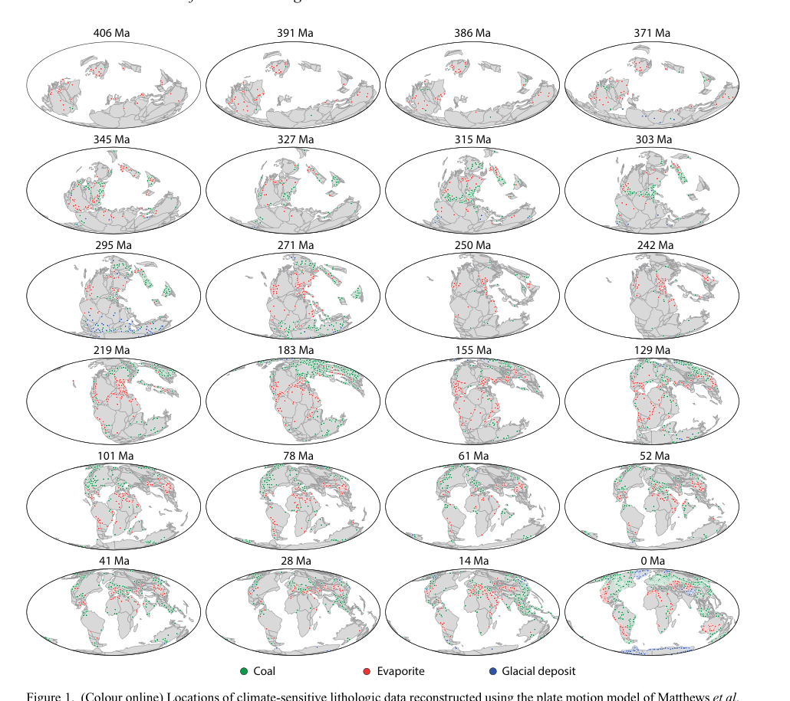
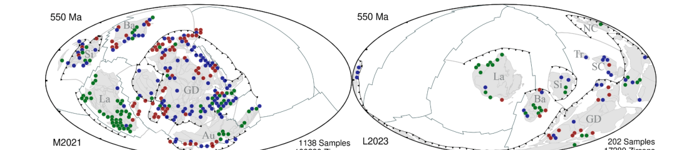
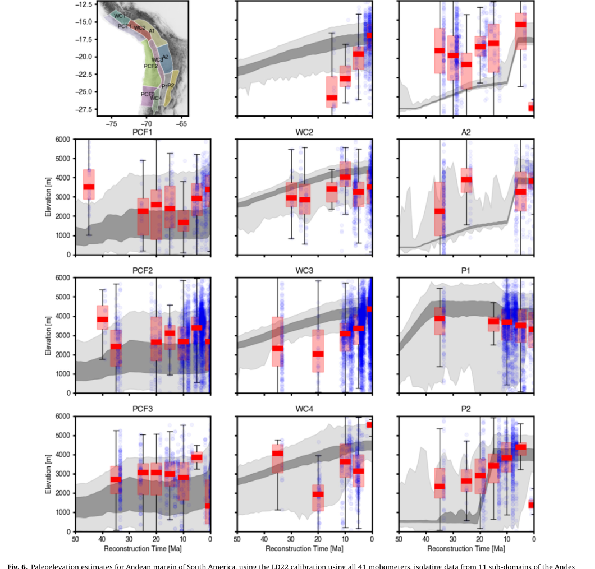
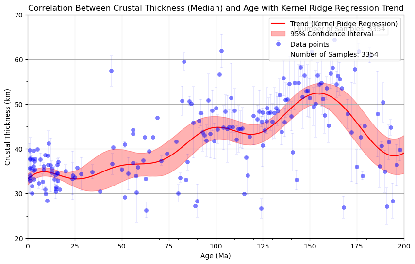
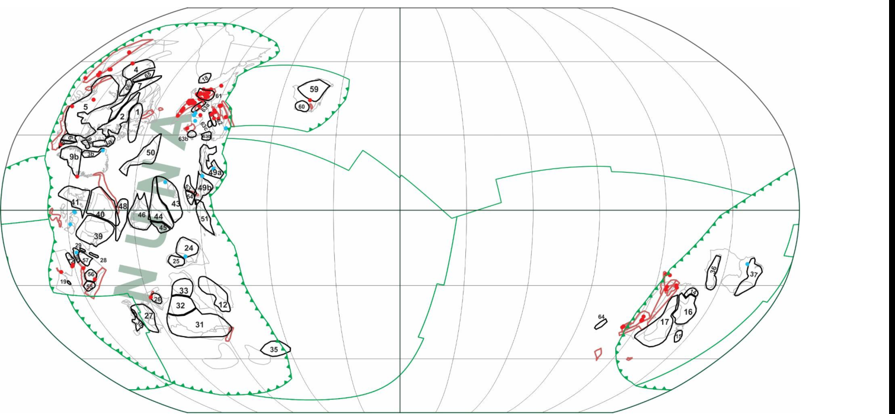

Cao et al. (2018, Geological Magazine) asked a simple question with a surprisingly fiddly answer: has the latitudinal distribution of climate-sensitive rocks (coals, evaporites, glacial deposits) stayed the same through greenhouse and icehouse Earth? Correcting for the uneven way continental area itself is distributed by latitude (there is far more land near 60° than near the equator) turns out to matter as much as the raw counts. The maps below step that corrected record from 406 Ma to the present, plate motions and all.

Figure 1, Cao et al. (2018).
Jian et al. (2022, JGR) trained a classifier to link the age spectrum of detrital zircons in a rock sample to the tectonic setting it was deposited in (convergent, extensional, or neither) using a global zircon database and full-plate reconstructions together, with roughly 70% success at picking out convergent settings. Jian et al. (2025, Precambrian Research) pushed that categorization back to 3.5 Ga, using it as an independent check on competing deep-time reconstruction models: if a model's plate boundaries don't line up with where the zircon record says convergence was happening, that's evidence against it. The maps below compare two alternative models at 550 Ma against the same categorized zircon samples.

From Figure 3, Jian et al. (2025).
Liu et al. (2024, Gondwana Research) mapped paleoelevation along the entire western margin of South America since the Late Paleozoic, using geochemical signatures of magmatic rocks that correlate with the crustal thickness beneath them at the time they erupted. Binning results in both space and time makes it possible to trace mountain building sub-region by sub-region, and to test the results against independent paleotopography compilations built from entirely different methods.

Figure 6, Liu et al. (2024).
Zhou et al. (2025, JGR) took a similar idea (inferring crustal thickness from igneous geochemistry) and rebuilt it as a machine-learning "chemical mohometry" model, trained on geochemical data from present-day subduction zones, collision orogens and intraplate settings alongside their known Moho depths. Applied to samples from southern Tibet and the South China Block, the model's reconstructed crustal thickness through time tracks known tectonic history closely, and highlights a correlation between anomalously thick ancient crust and the location of porphyry ore deposits.

Crustal thickness through time, modelled with the mohometry approach of Zhou et al. (2025), generated from the paper's accompanying code repository, rather than the published figure itself.
Puetz et al. (2026, Geoscience Frontiers) combines global databases of cratons, orogens and igneous zircon samples with recent full-plate paleogeographic reconstructions spanning 2 billion years. Positioning every one of these datasets consistently in space and time reveals a strong correlation between convergent-setting zircons and reconstructed subduction zones, and patterns consistent with the long-debated supercontinent cycle. The map below reconstructs the Nuna supercontinent at 1600 Ma, with convergent (red) and extensional (blue) zircon locations plotted against cratons and orogenic belts.

Figure 2, Puetz et al. (2026).